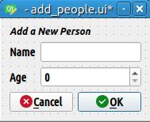

重要
翻訳は あなたが参加できる コミュニティの取り組みです。このページは現在 100.00% 翻訳されています。
5.3. レッスン: フォーム
デジタイズで新しいデータを追加する場合、その地物の属性を入力するダイアログが表示されます。ただし、このダイアログボックスは既定ではあまり見た目がよくありません。これは特に大規模なデータセットを作成する場合や他の人にデジタイズを手伝って貰うときに既定のフォームではわかりにくい場合に、有用性の問題を引き起こす可能性があります。
幸いにも、QGISではレイヤに独自のカスタムダイアログを作成できます。このレッスンではその方法について説明します。
このレッスンの目標: レイヤのフォームを作成します。
5.3.1. ★☆☆ （初級レベル） 理解しよう: QGISのフォームデザイン機能を使う
レイヤ パネルで
roadsレイヤを選びます前にやったように 編集モード に入ります
roadsレイヤの属性テーブルを開きますテーブルのどこかのセルで右クリックします。 フォームを開く を含んだ短いメニューが現れます。
それをクリックして、QGISがこのレイヤのために生成するフォームを見てみましょう
明らかに、毎回 属性テーブル で特定の街路を検索するのではなく、地図を見ながらこれを行うことができるといいですね。
レイヤ パネルで roads レイヤを選びます
 地物情報表示 ツールを使って、地図上の任意の街路をクリックします。
地物情報表示 ツールを使って、地図上の任意の街路をクリックします。地物情報 パネルが開き、フィールドの値やクリックした地物に関する一般的な情報をツリー表示で確認することができます。
パネル上部の
 地物情報表示の設定 メニューから 単一地物の場合、自動でフォームを開く チェックボックスをオンにします。
地物情報表示の設定 メニューから 単一地物の場合、自動でフォームを開く チェックボックスをオンにします。さて、地図内のどれかの街路をもう一度クリックします。前の 地物情報 ダイアログに沿って今やおなじみのフォームが表示されます：
単一地物の場合、自動でフォームを開く がチェックされている限り、 識別 ツールで1つの地物をクリックするたびに、 そのフォームがポップアップ表示されます。
5.3.2. ★☆☆ （初級レベル） 自分でやってみよう: フォームを使って値を編集する
編集モードの場合は、このフォームを使用して地物の属性を編集できます。
編集モードをアクティブにします (まだアクティブになっていない場合)。
- 地物情報表示 ツールを使って Swellendam を通る大通りをクリックします：

その highway の値を
secondaryに編集します編集モードを終了し、編集内容を保存します
属性テーブル を開くと、属性テーブルの値が更新されたことがわかります。つまり、ソースデータも更新されています。
5.3.3. ★★☆ （中級レベル） 理解しよう: フォームのフィールドタイプを設定する
フォームを使用して編集するのはよいのですが、まだ何もかも手で入力しなければいけません。幸いにも、フォームには様々な方法でデータの編集ができる様々な種類の、いわゆる ウィジェット を持ちます。
roads レイヤの プロパティ... を開きます
属性 タブに切り替えます。次が表示されます:

属性フォーム タブに切り替えます。このように表示されます：

onewayの行をクリックし、オプションのリストから ウィジェットタイプ として チェックボックス を選択します:OK をクリックします
（もし
roadsレイヤが編集モードになっていなければ）編集モードに入ります- 地物情報表示 ツールをクリックします
前に選んだのと同じ大通りをクリックします
これで oneway 属性の隣に True (チェック済み) または False (チェックなし) を示すチェックボックスが表示されることがわかるでしょう。
5.3.4. ★★★ （上級レベル） 自分でやってみよう:
highway フィールドに、より適切なフォームウィジェットを設定します。
答え
道路がとることのできるタイプは明らかに限られており、 TYPE について、このレイヤ属性テーブルを確認すると、それらはあらかじめ定義されていることが分かります。
ウィジェットを バリューマップ に設定し、 レイヤから値を読み込む をクリックします。
ラベル ドロップダウンで roads を選択し、 値 と 説明 オプションで highway を選択します:
OK を三回クリックします。
編集モードがアクティブなときに、今、街路で Identify ツールを使用すると、表示されるダイアログは次のようになる筈です:

5.3.5. ★★★ （上級レベル） 自分でやってみよう: テストデータを作る
まったくのゼロから独自のカスタム フォームを設計することもできます。
次の2つの属性を持つ
test-dataという名前の簡単なポイントレイヤを作成します：name (text)
age (integer)

デジタイズツールを使用して新しいレイヤ上にいくつかのポイントを追加してテスト用データを作成します。新しいポイントをキャプチャするたびにQGISの既定の属性フォームが表示されます。
注釈
以前の作業の時からスナップを有効にしたままの場合、スナップを無効にする必要があります。

5.3.6. ★★★ （上級レベル） 理解しよう: 新しいフォームを作る
さて、属性データを取得するときに使う、独自のカスタムフォームを作成したいと思います。これを行うには、 QT Designer をインストールする必要があります（フォームを作成する人だけが必要です）。
QT Designer を起動します。
表示されるダイアログで新しいダイアログボックスを作成します:

画面の左側(デフォルト)にある ウィジェットボックス で Line Edit アイテムを探します。
このアイテムをクリックしてフォームにドラッグします。フォーム上に新しい Line Edit が作成されます。
Line Edit要素を選択すると、その プロパティ が画面の片側に沿って表示されます(デフォルトで右側):

その名前を
nameにします。同じ方法で、新しい Spin Box を作成し、その名前を
ageに設定します。新しい人を追加するというテキストを太いフォントで書いた ラベル を追加します（設定方法は、オブジェクトの プロパティ を見てください）。また、（ラベルを追加するのではなく）ダイアログ自体のタイトルを設定することもできます。Line Edit と Spin Box に、 ラベル を追加します。
自分の好きなように要素をアレンジしてください。
ダイアログの任意の場所をクリックします。
フォームレイアウト ボタンを探します（デフォルトでは画面の上端に沿ったツールバーにあります）。これで、ダイアログが自動的にレイアウトされます。
ダイアログの最大サイズ(プロパティ)を
200(幅) ×150(高さ) に設定します。このようなフォームになるはずです:
 新しいフォームを
exercise_data/forms/add_people.uiという名前で保存します保存が完了したら、 Qt Designer を終了します。
5.3.7. ★★★ （上級レベル） 理解しよう: レイヤをフォームに関連付ける
QGISに戻ります
凡例で test-data レイヤをダブルクリックしてプロパティにアクセスします。
レイヤプロパティ ダイアログの 属性フォーム タブをクリックします
属性エディタレイアウト ドロップダウンボックスで ui-ファイルを提供する を選択します。
楕円形ボタンをクリックし、先ほど作成した
add_people.uiファイルを選択します:
レイヤプロパティ ダイアログで、 OK をクリックします
編集モードに入り、新しいポイントを取り込みます
そうするとカスタムダイアログが表示されます(QGISが通常作成するものの代わりに)。
- 地物情報表示 ツールを使ってポイントの一つをクリックした場合、識別結果ウィンドウで右クリックして、コンテキストメニューから を選択すると、フォームを表示することができるようになりました。
このレイヤの編集モードになっている場合、コンテキストメニューには が表示され、最初のキャプチャ後でも新しいフォームで属性を調整することができるようになります。
5.3.8. 結論
フォームを使用すればデータの編集や作成がもっと楽になります。ウィジェットの種類を編集するか全くのゼロから新しいフォームを作成することで、新しいデータをデジタイズをする人のエクスペリエンスをコントロールできます。それによって誤解や不必要なエラーを最小限に押さえることができます。
5.3.9. より詳しく知りたい場合は
もし上記の上級編を完了し、Pythonの知識があれば、データ検証、オートコンプリートなどを含む高度な機能を可能にするPythonロジックによるカスタム機能フォームの作成についての このブログエントリー をチェックするとよいでしょう。
5.3.10. 次は?
地物フォームを開くことはQGISができる標準的な操作の1つです。一方で、自ら定義したカスタムアクションを実行させることもできます。これは次のレッスンのテーマです。